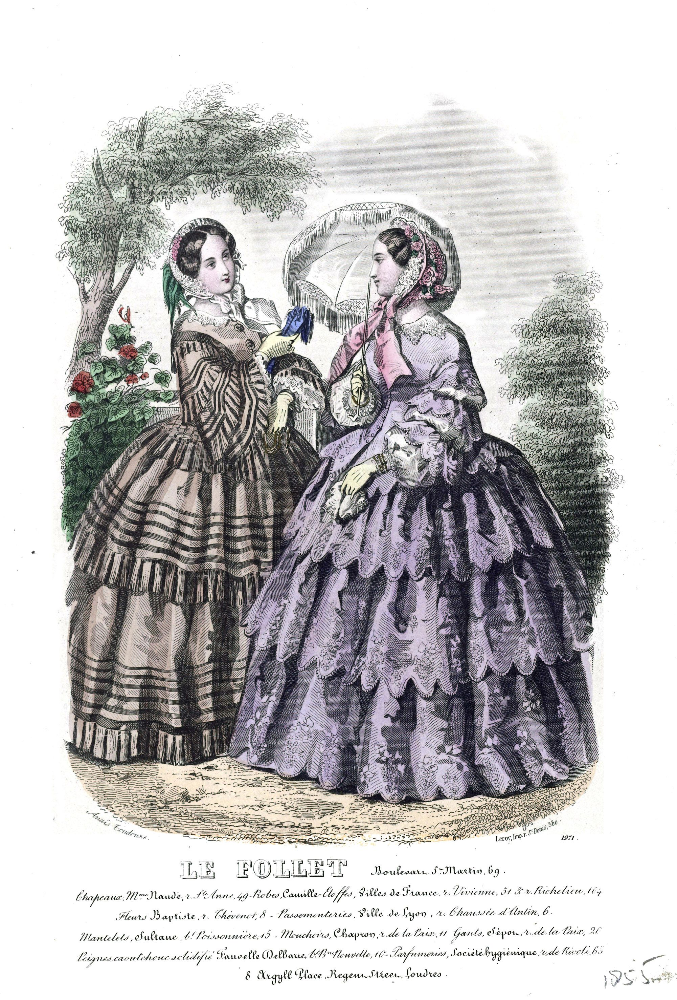
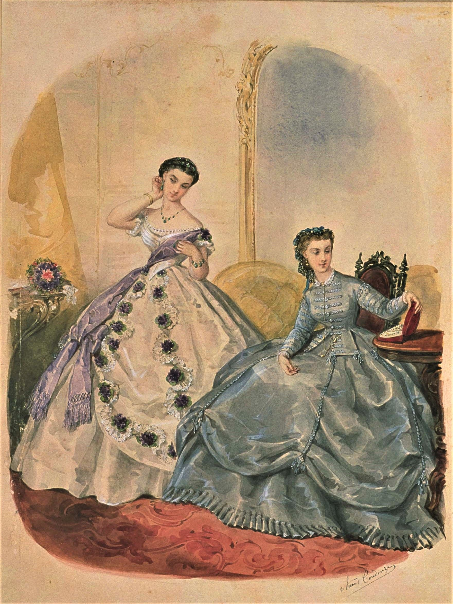
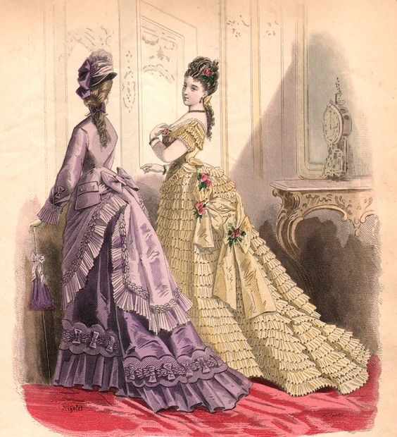
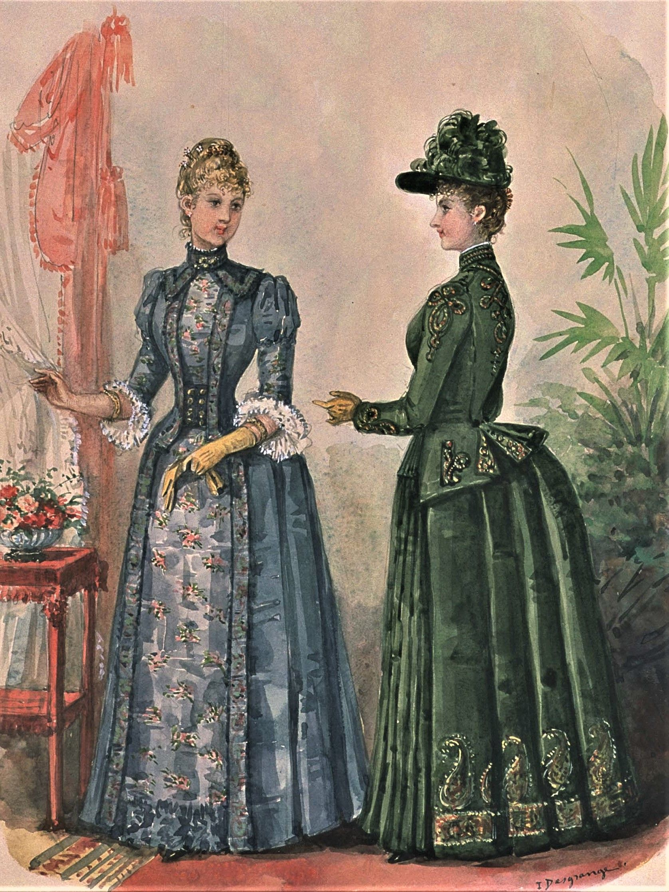
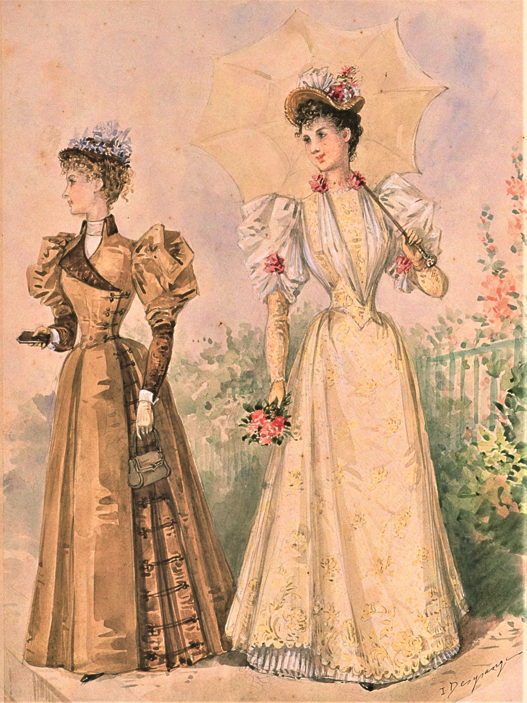

1840-talets mode präglades av spetsiga livstycken, kupolformade kjolar och långa, snäva ärmar. Detta beskrevs ibland som "viktoriansk gotisk stil". Klänningsärmarna satt lågt på axeln och hade kanske volanger eller puffar. Livstycken var långa och åtsittande, och hölls fast vid ryggen av knappar, band eller krokar vilket gjorde det svårt för kvinnorna under denna period att klä sig själva. Kjolarna var vida med hjälp av vaderad kudde som knöts runt midjan och placerades på baksidan av höfterna. En populär uppfunning under 1840-talet var klänningar med utbytbara livstycken som gjorde det möjligt att använda samma kjol för både dagsklädsel och aftonklädsel. Aftonklädselns livstycken var mer avslöjande och bestod av korta ärmar och berth-kragar. Under senare delen av 1840-talet började den gotiska silhuetten försvinna och aftonkjolarna utsmyckades med spets, volanger, prydnadsknappar, blommor och rosetter.
De underkläder som användes var ett löst åtsittande, knälångt linne med korta ärmar, ett par underbyxor, en korsett och ett korsettöverdrag, en vadderad höftkudde samt flera förstyvade underkjolar. Bahytter och andra huvudbonader var ett måste när en kvinna lämnade sitt hem, precis som fashionabla handskar, kappor och matlar.
1850-talet

Dagsklänningar, 1850-talet
1850-talets var ett decennium med ljusa färger, exotiska tyger och kvinnliga kurvor. Timglass-silhuetten var fortfarande idealet med åtsittande livsstycken och kupolformade kjolar som fortsatte växa tack vare den nyuppfunna kronolinen. Till vardags var två- och tredelade ensembler med ett kavaljliknande livstycke, en väst och en kjol modet. De populära pagodärmarna var snäva vid axeln men blev allt bredare när de nådde armbågarna, och parades ihop med åtsittande underärmar. Aftonklädseln symboliserades av låga urringningar och korta ärmar med spets och tyll. Kjolarna blev allt större närmare årtiondets slut och var smyckade med rader av volanger. Under senare delen av 1850-talet var det populärt med bälten i midjan, knäppta livstycken med knappar upp till halsen och klockformade ärmar till vardagskläder.
Den idealiska timglas-silhuetten skapades med en liten, koresetterad midja och opraktiskt stora kjolar. Krinolinen gjorde detta möjligt och var tidigare en slags underkjol styvad med tagel. Men när kjolarna blev allt bredare klarade inte hästhårskrinolinen av att bära allt, vilket ledde till utvecklingen av en stadigare krinolin bestående av en ställning stålringar hängande i tyg eller läderringar år 1856.
Under 1850-talet var anspråkslöshet inte längre lika viktigt när det gällde acessoarer. Därför var hättorna och huvudbonaderna som användes endast en form av dekoration och skyddade inte längre håret eller ansiktet lika mycket. Till aftonklädesln var det populärt med blomkronor eller huvudbonader av spets, rosetter och andra dekorativa ornament. Fashionabla ytterkläder inkluderade mantlar, kappor, och kashmirsjalar samt handskar, solfjädrar och parasoll.
1860-talet

Aftonklänningar, 1860-talet
1860-talets mode förändrades mycket mellan årtiondets början och slut. Början av årtiondets klänningar var maskintillverkade och färgade i fler olika färger tack vare upptäckten av anilinfärgämnen. Krionolinen var så stor som den någonsin skulle komma att bli men var däremot nu formad som en oval med större fokus på baksidan. Kjolarna fick även släp som var fantastiska dekorationer i salongerna men mindre praktiska utomhus. Därför blev det populärt att ringla upp släpen och fästa dem med snören, tofsar och band vilket resulterade i mer detaljerade underkjolar. Till vardags var vida kjolar i kombination med Garibaldi-blusar och Zouave-jackor väldigt fashionabelt. Pagodärmar med underärmar och åtsittande ärmar med dekorativa ärmuppslag var fortfarande populärt. Som accessoar till dagsklädsel var det vanligt med breda, schweiziska bälten. Aftonklänningarna på 1860-talet hade korta ärmar som satt lågt på armen och draperades med berthkragar, hade dubbla kjolar och var dekorerade med spets, strutsplymer, svandun och girlander av blommor. Under senare delen av årtiondet förändrades modet. Dagsklänningarna var höga i halsen, hade kortare kjolar och åtsittande ärmar. Aftonklänningarnas ärmar försvann och ersattes av remmar och bandsrosetter. Klänningsliven var kraftigt utsmyckade och kjolarnas fokus låg på baksidan och släpet med massor av utsmyckningar.
På grund av kjolarnas förändrade utseende behövde krinolinen göras om för att passa det nya modet. Därför tillverkades den så kallade krinoletten med vidden endast åt sidorna och bakåt. Eftersom kjolarna blev allt mindre och timglas-siluetten fortfarande var idealet blev även korsetterna mer åtsittande för att framhäva den extremt smala midjan. Till klädseln var det populärt med dekorativa hättor, hattar, stövlar gjorda av sammet, kashmirhandskar, ficknäsdukar och franska muffar. På baler användes matchande smycken, hårbroscher och kronor gjorda av blommor och band.
1870-talet

Dagsklänning och aftonklänning, 1870-talet
Under 1870-talet ändrades silhuetten till en mer smalare och elegantare. Krinolinen försvann och sensuella klänningar som framhävde kvinnans varje kurva var på modet. Klänningsutsmyckningarna hade däremot blivit ännu mer kraftiga, med tofsar, fransar, knappar, rosetter, sammet och snörband som påminde om dåtidens draperier och möbler. Dagsklänningarnas urringningar var höga och vida pagodärmarna blev än en gång populära. Kjolarna bestod av två kjolar, en utsmyckad underkjol och en öppen överkjol som draperades bakåt och formade ett elegant släp. Till vardags var det populärt med jack-liknande klänningsliv eller så kallade "cuirasse"-klänningsliv som satt åtsittande även vid höfterna. Aftonklänningarna följde samma silhuett som dagsklänningarna och kom i en mängd olika stilar. De flesta klänningarna hade korta ärmar, antingen med puffar eller åtsittande, och var urringade både fram och bak. Ju mer åren gick desto smalare och mer utsmyckade blev kjolarna.
1870-talets silhuett uppnåddes med hjälp av en turnyr som bestod av stålringar med vidden endast bakåt. Kjolarna blev då skurna nästan raka och släta på framsidan och på sidorna, men rikligt draperad på baksidan. Populära accessoarer under årtiondet var kraftigt, dekorerade hattar, stråhättor, knappstövlar, långa handskar, silkesparasoll och stora solfjädrar. Till ytterklädsel användes jackor och rockar.
1880-talet

Dagsklänningar, 1880-talet
1880-talets mode präglades av skräddarsydda, åtsittande klänningar som belyste kvinnans föränderliga roll i samhället. Kvinnorna fick utbilda sig, skaffa jobb och delta i sporter. Många demonstrerade även för att de skulle få rösträtt. Klädmodet under början av årtiondet liknade 1870-talets, med enkla rumpkuddar som gav form åt den populära silhuetten, smala midjor och välutsmyckade tyger. Dagsklänningarna var höga i halsen med långa, snäva ärmar medan aftonklänningarnas uringingar var låga och ärmarna inget mer än band. Det dröjde inte många år innan turnyren var tillbaka, mer dramatisk än tidigare och nästan hyll-liknande. Dock blev kjolarna vidare redan under mitten av årtiondet med långa, nu avtagbara, släp och långa, åtsittande klänningsliv. Ärmarna var snäva och långa, även hos aftonklänningar, och välutsmyckade kjolar var fortfarande populärt. Kvinnornas klänningar blev allt enklare och mer funktionsduglig närmare slutet av 1880-talet.
Den dramatiska turnyren var ofta kritiserad och förlöjligad på grund av dess utseende. Då och då blev kriminella kvinnor påkommna med att använda den stora turnyren till att gömma stöldgods. 1880-talets klänningar kombinerades med höga hattar och hättor, högklackade stövlar, handväskor, solfjädrar och långa handskar. Ytterklädseln varierade och fanns i många olika stiler, men många damer bar kappor, peliser eller mantlar.
1890-talet

Dagsklänningar, 1890-talet
1890-talet var århundrandet för "den nya kvinnan" som var både intelligentare och starkare än hennes förfäder. Detta representerade stereotypen av den moderna kvinnan som bar rationella kläder, cyklade och insisterade på jämnlikhet mellan män och kvinnor, ofta kritiserad och förlöjligad. Vid slutet av den viktorianska eran hade "den nya kvinnan" uppstått som ett feministiskt ideal.
Fashionabla klänningar under detta århundrade var anspråkslösa och värdiga med höga kragar, raka kjolar och enorma puffärmar. Det tidiga 1990-talets klädmode bestod av blusar och västar, klockliknande, raka kjolar och långa ärmar med puffar vid axlarna som vardagsklädsel. Medan dagsklänningarna täckte kroppen från topp till tå var aftonklänningarna urringade i olika stilar och bestod av utsmyckade puffärmar och vackert dekorerade släp. Under årtiondets gång förblev dagsklänningarna enkla och affärsliknande med något större kjolar som resulterade i den populära timglas-silhuetten. Aftonklänningarnas puffärmar ersattes under 1990-talets mitt av enkla band och kom i en mängd olika ljusa färger. Många klänningar smyckades med broderi, glaspärlor, spetsar, strass, juveler, paljetter och skimrande stålpärlor. Närmare slutet av årtiondet minskade ärmarna i storlek och kjolarna blev allt kortare.
Modeetikett
Under den viktorianska eran bytte medelklassen och överklassens kvinnor klänningar flera gånger om dagen på grund av de olika klänningarna som användes vid olika tillfällen. En fashionabel kvinna ägde frukostklänningar att bära vid dagens första mål, visitklänningar som användes under morgonbesök, promenaddräkter, eftermiddagsklänningar för både hemmabruk och besök, middagsklänningar, riddräkter och resedräkter, och det mest praktfulla plagget i en viktoriansk kvinnas garderob — aftonklänningen.